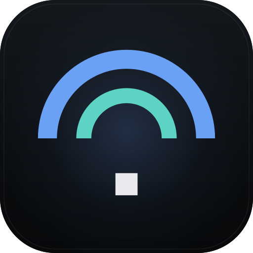

lgpl-3.0-or-later / php + apache

Download, upload, ping and jitter, measured in the browser and drawn while the link is busy. Self-hosted, one container, no external services.
github.com/Dynesshely/LibreSpeedex